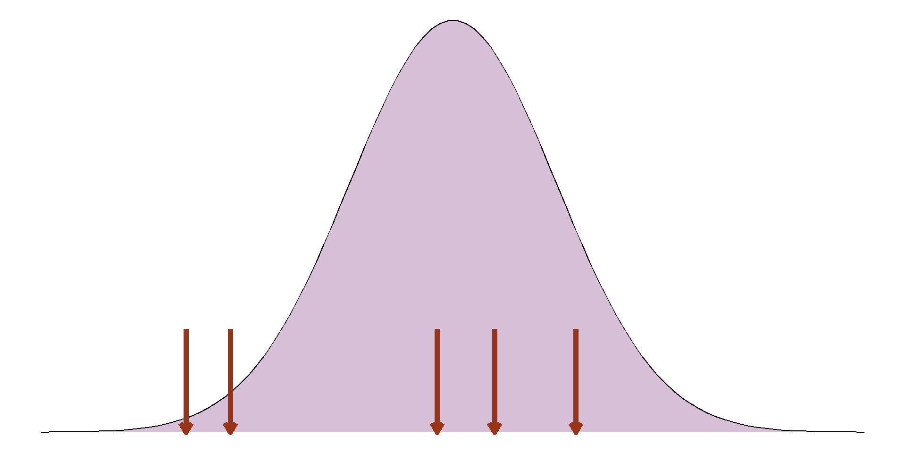
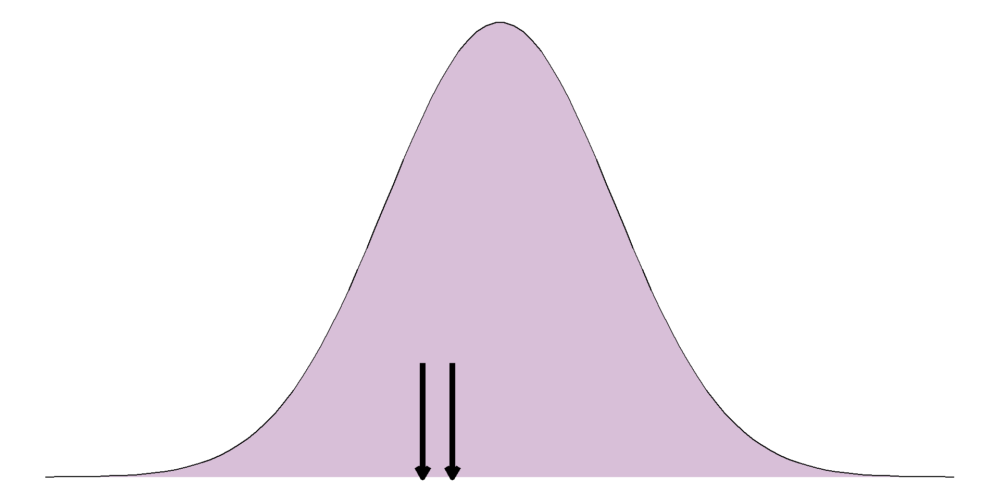

Introduction to Statistics
Part 2: Exploring trends and going beyond the sample
Sophie Lee
Recap of Part 1
Before the analysis
- How to formulate a research question
- Population
- Intervention
- Comparison
- Outcome
- Need a random sample from the target population
- Outcome must be measurable and relevant
Before the analysis
- Consider biases
- Lead to invalid results
- Unable to make inferences and answer the research question
- Be aware of missing data
- Some missing data can lead to biases
- Even where they don’t reduces sample size and power
- Think of potential reasons and be transparent
Summary statistics
- Quantify aspects of the sample
- Not used to answer research question
- Summaries of categorical variables include proportion, percentage and rate
- Choice of summary up to you but have different interpretations
Summary statistics
- Summaries of numeric variables quantify the centre and spread of a sample
- Choice of summary depends on the distribution of the sample
Summary statistics
- Measure of centre is given by the mean (if normally distributed) or median
- Measure of spread is given by the SD (if normally distributed) or IQR
- Distribution checked using a histogram or, if we don’t have the data, estimating the range
Normal distribution
Normal distribution

Quantifying differences and
trends in a sample.
Quantifying differences and trends
Most appropriate choice depends on intention, type of outcome, nature of the relationship
- Comparison of variable between groups
- Investigating trends over time
- Relationship between numeric variables
Comparing categorical outcomes
Compare summary statistics (proportions, percentages, or rates) between groups
Absolute difference: Subtract values
Relative difference: Divide values
Comparing categorical outcomes
| Species | Total | Female penguins | Male penguins |
|---|---|---|---|
| Adelie | 146 | 73 (50%) | 73 (50%) |
| Gentoo | 119 | 58 (48.74%) | 61 (51.26%) |
Absolute difference: 50% - 48.74% = 1.26%
The absolute difference between Adelie and Gentoo penguins is 1.26 percentage points.
Comparing categorical outcomes
| Species | Total | Female penguins | Male penguins |
|---|---|---|---|
| Adelie | 146 | 73 (50%) | 73 (50%) |
| Gentoo | 119 | 58 (48.74%) | 61 (51.26%) |
Relative difference: 50% \(\div\) 48.74% = 1.03
There were 1.03 times more female penguins in the Adelie group than the Gentoo penguin group
No difference would = 1
Comparing categorical outcomes
| Species | Total | Female penguins | Male penguins |
|---|---|---|---|
| Adelie | 146 | 73 (50%) | 73 (50%) |
| Gentoo | 119 | 58 (48.74%) | 61 (51.26%) |
Relative difference: 48.74% \(\div\) 50% = 0.97
There were 0.97 times the percentage of female penguins in the Gentoo group than the Adelie penguin group
Less than 1: a reduction
Comparing numeric outcomes
Compare measures of centre/average (mean or median) between groups
Most appropriate depends on distribution of sample in each group
Requires a histogram per group
Comparing numeric outcomes

Comparing numeric outcomes
Neither the female nor the male group have a normal distribution → compare medians.
Median body mass of female penguins: 3650g
Median body mass of male penguins: 4300g
Average difference in body mass: -650g
Female penguins were 650g lighter on average compared to male penguins in this sample
Comparing variables over time
Visualised using line graph
Common comparisons: absolute difference, relative difference, or percentage change
Choice depends on intention, interpretation differs


Comparing variables over time
Absolute difference: 1,841,000 - 1,239,000 = 602,000
There were 602,000 less violent crimes reported in 2020 compared to 2010
Relative difference: 1,841,000 ÷ 1,239,000 = 1.486
There were 1.486 times more violent crimes reported in 2010 compared to 2020
Comparing variables over time
The percentage change can also be found by converting the relative difference
Compare relative difference to no difference: 1.486 - 1 = 0.486
Convert the proportion change to percentage: 0.486 x 100%
= 48.6%
There were 48.6% more violent crimes reported in 2010 than 2020
Comparing variables over time
Percentage reduction found in similar way
Relative difference: 1,239,000 ÷ 1,841,000 = 0.673
Compare to no difference: 1 - 0.673 = 0.327 (32.7%)
There were 32.7% fewer violent crimes reported in 2020 than 2010
Relationship between numeric variables
Scatterplot used to visualise trends
Strength of relationship quantified using correlation coefficients
Choice of coefficients depends on if trend is linear or not
- Linear trend: Pearson’s correlation coefficient
- Nonlinear trend: Spearman’s correlation coefficient
Correlation coefficients
Take value between -1 and 1
Correlation of 0 means no association
Closer coefficient is to +1/-1, the stronger the positive/negative association is

Beyond the sample
What are inferential statistics?

What are inferential statistics?
Inferential statistics make inferences about target population based on a random, representative sample.
Combine sample estimates with sample size and level of precision
Most common inferential statistics: p-values and confidence intervals
Measures of precision
Precision of an estimate quantified by standard error (SE)
Based on sample size and sample variability
Different formula for each type of estimate (e.g. mean, percentage, difference between means)
\(SE(\bar{x}) = \frac{SD}{\sqrt{n}}\)
Measures of precision
Larger SE → less precise
Smaller SE → more precise
\(SE(\bar{x}) = \frac{SD}{\sqrt{n}}\)
For every parameter of interest:
- Larger sample, higher precision → lower standard error
- More variability, lower precision → higher standard error
Inferential statistics work based on the central limit theorem
Central limit theorem

Central limit theorem

Central limit theorem
Central limit theorem
Central limit theorem

Central limit theorem
Central limit theorem
Central limit theorem
Central limit theorem
Central limit theorem
Central limit theorem
Central limit theorem

Central limit theorem
Central limit theorem
Central limit theorem
Central limit theorem
Confidence intervals
- A range of values the true population parameter is compatible with
- Based on sample estimate, precision, and confidence level
| Confidence levels | Number of SEs |
|---|---|
| 80% | 1.282 |
| 90% | 1.645 |
| 95% | 1.960 |
| 99% | 2.576 |
| 99.9% | 3.291 |
Confidence intervals
- A range of values the true population parameter is compatible with
- Based on sample estimate, precision, and confidence level
- Based on central limit theorem, can capture ranges we would expect a percentage of parameter estimates to lie:
\(\bar{x} \pm 1.96 \times SE(\bar{x})\)

Confidence interval example
Let’s compare the body mass of our penguins between sexes.
First, we want to check the distribution of these samples:
Confidence interval example
Both groups appear to be normally distributed, so we can compare the means.
Mean body mass of male penguins: 4010.28g
Mean body mass of female penguins: 3419.16g
Difference in the means (of the sample): 4010.28g - 3419.16g
= 591.12g
Confidence interval example
Difference in the means (of the sample): 591.12g
Standard error of the mean difference= 4.23g
95% confidence interval: 591.12 \(\pm\) 1.96 \(\times\) 4.23
= 582.83g, 599.42g
But what does that mean??
Confidence interval example
95% confidence interval: 582.83g, 599.42g
We are 95% confident that male penguins were between 582.83g and 599.42g heavier than female penguins on average.
Note that this confidence interval only contains positive values.
p-values
- Probability of obtaining a result as extreme or more extreme as the sample if the null hypothesis is true
- Null hypothesis (H0): no difference/association
p-values

p-values

p-values
- Probability of obtaining a result as extreme or more extreme as the sample if the null hypothesis is true
- Null hypothesis (H0): no difference/association
- Low p-value: less evidence to support the null hypothesis
- Very low p-value is known as statistically significant
Statistical significance
Often significance is defined by arbitrary cut-off (usually 0.05)
Be careful with these arbitrary definitions, it is not how probability behaves!
p < 0.05 is significant at the 5% level
We never accept or reject a null hypothesis
p-values example

p-values example
As we are comparing groups, our null hypothesis is that there is no difference in the target population.
Sample mean difference: 591.12g
Standard error of the difference: 4.23g
p-values assume that the null hypothesis is true
p-value example

p-value example
The observed sample mean difference is (591.12 - 0 \(\div\) 4.23) = 139.68 standard errors away from the null hypothesis.
This is so far that we can’t even see it on our histogram!
The probability of this happening if the null were true is VERY VERY small (p < 0.00000000001).
In this case, we would say this difference is highly significant
Relationship between p-values and confidence intervals
Confidence intervals and p-values are based on the same information and so agree with one another
If a p-value is above 0.05, the sample estimate is less than 1.96 SEs away. This means it will be within the 95% confidence interval
If the null hypothesis is outside the 99% confidence interval, it is over 2.576 SEs away from the sample estimate so p < 0.01
Exercise 3:
Inferential statistics

10:00